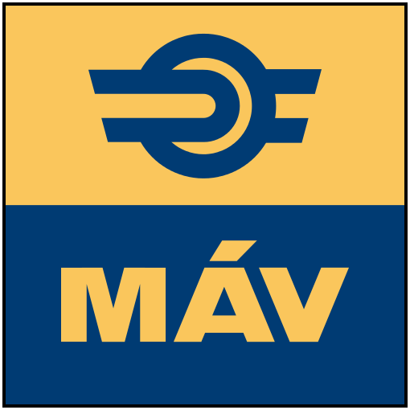
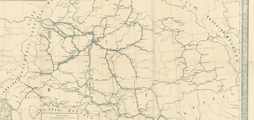
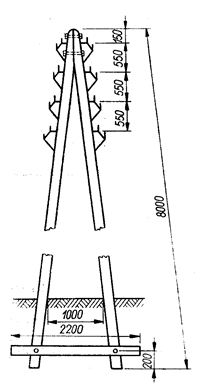
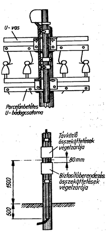
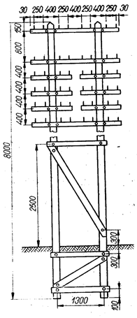
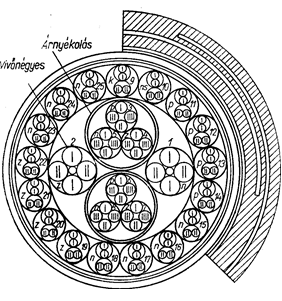
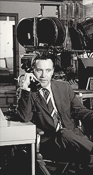
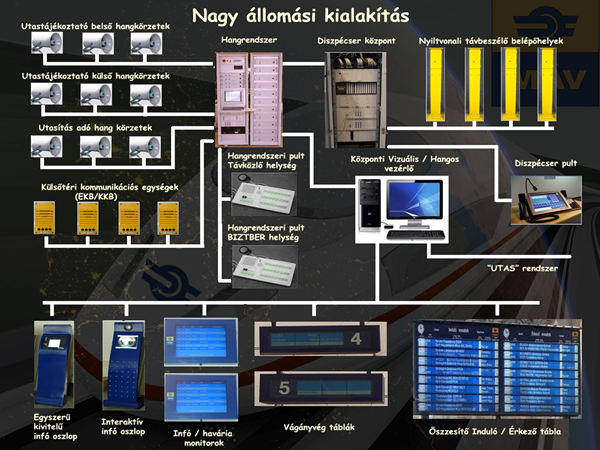
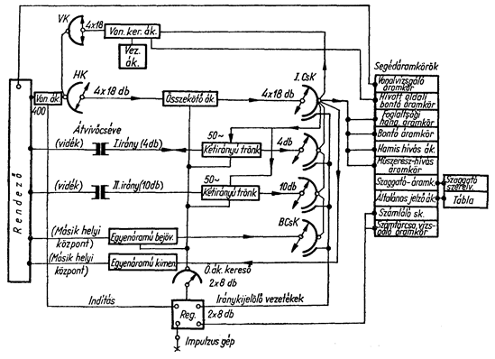
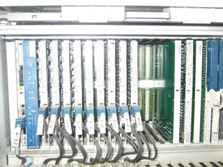

A honlap megjelenésében az emberi szem és az idegek számára megnyugtató sötét mód használatára épül, de nem teljesíteni annak minden jellemzőjét.
Akadnak olyan esetek, mikor a sötét mód használata az előnyök mellett is zavaró lehet. Ilyen például az, amikor egy oldal kiemelkedően sok szöveget tartalmaz. Sötét háttér előtt világos szöveget huzamosabb ideig olvasni kifejezetten megterhelő lehet a szem és az agy számára is. Az alábbi fényes mód kapcsolóval a holnapot világosabb háttérrel és sötét betűvel is böngészheti!
Figyelem!

A magyar vasúti távközlés történetének rövid összefoglalása
A megalakulás
A Magyar Vasút 1868. július 1-ei megalakulásától kezdődően az egyes legfontosabbnak vélt távközlési szakágazatok röviden egy-egy csokorba gyűjtésre kerültek a 2000-es év végéig.

A Magyar Királyi Távírda hálózata 1867-ben
A távirda, majd folytatásaként a távközlés első művelői és szervezete a forgalmi szakszolgálat keretein belül a MÁV megalakulásakor jött létre, mint távirdaintézőség vagy távirdaellenőrség.
Megjegyzés:
A 155 éves történet alapján a vasúti távközlés a 2023. évre a szervezeti felépítések utolsó formája szerint az Infokommunikációs és technológiai rendszerek főigazgatóság keretén belül működik, mely a MÁV Zrt. Pályaműködtetői Vezérigazgató-helyettes felügyelete alatt állva, a pályavasúti területi igazgatóság keretén belül dolgozik.
Ahogyan a magyar vasút vonalhálózata épült és kialakult még a 19. században, párhuzamosan megkezdték a vasúti távirda-, távközlőhálózat kiépítését is a vasúti munkafolyamatok (vonatmozgás, áru- és személyszállítás, utaskiszolgálás stb.), valamint a vasút belső általános információáramlásának, majd később az adatfeldolgozás segítésére és biztosítására. Az első feladat az ún. alaphálózat megteremtése volt, hogy a különböző (Bain-Baumgartner, Morse-féle) távjelző-/távíró-összeköttetések kiépíthetők legyenek. A vasúti távközlés aztán az idő múlásával, 1989-re, a távközléstechnika mindenkori fejlődését és a mindenkori vasút pénzügyi lehetőségeit kihasználva, valamennyi ágazatát (légvezeték, kábel, átviteltechnika, távbeszélő- és távírókészülékek, -központok, az automatizált telefon- és távíró-távhívás, telefon- és távírókészülékek, rádiók, audio és vizuális utastájékoztatás, utasításadás, különböző irányítórendszerek, stb.) fejlesztve, az elérhető legjobb vasútüzemet segítő távközlőhálózatot építette ki.
A MÁV az új távközléstechnika alkalmazásában mindig élen járt az országban, többször megelőzve a Magyar Postát. Az 1990-es évek aztán fordulatot hoztak a vasúti távközléstechnikában, mivel az addig üzemben lévő analóg-berendezések mellett megjelentek a digitális rendszerek, amelyek korlátlan fejlődést biztosítottak a vasúti munkafolyamatok végzésének, az adatfeldolgozásban is.
A fontosabb részhálózatok:
- távközlő-alaphálózat,
- különcélú távközlő hálózatok és berendezések,
- távíróhálózat,
- telefonközpont hálózat,
- átviteltechnika,
- rádióhálózat,
- távközlés és informatika,
I. Távközlő-alaphálózat
a) A vasút az alaphálózatában a légvezetékes irányait először vas, majd a nagy távolságú összeköttetések részére bronzot alkalmazva építette meg, egyes-, kettes- és bakoszlopokra, melyek az első vonal villamosításáig - 1932-1934 - uralták a távíró- és telefonátvitel alapjait. Majd a miskolci vonal villamosításával valóságosan csökkenni kezdett a légvezetékes hálózat, mivel a vasútvonalak mellett a nagyfeszültségi veszélyeztetés kényszerűségéből, egyre-másra épültek a vonalkábelek. A légvezetékes hálózat ennek ellenére nem szűnhetett meg az ezredfordulóra sem. Az 1999-es év végére valamivel több mint 18300 huzalkilométerre csökkent a vezetékhossz, mintegy 2600 km mellékvonali oszlopsoron.
Néhány vonalon a leromlott légvezetékek helyett a MÁV légkábeleket is épített, melyek 1999 évben elérték az 500 nyomvonalkm hosszat, kb. 11 ezer km érhosszúsággal. Ezek a kábelek 4x4-es és 7x4-es kábellélek keresztmetszetűek, a réz erek pedig 0,8 mm átmérőjűek. A légvezetékek cseréjére, elsőként az állomásokon került sor helyikábelek felhasználásával. A helyikábelek keresztmetszete tág határok között található, melyekből az állomásokon általában 1x4-től a 208x4-es kábelekig kerültek lefektetésre. Az ilyen kábeleket természetesen nemcsak távközlési (telefon, adat, vizuális utastájékoztatás, hangrendszer az utasításadásra a váltókörzetekbe, stb.), hanem biztosítóberendezési célokra is felhasználják.
A MÁV a Magyar Kábel Művektől vásárolta leginkább a helyikábeleket alu vagy réz anyagú és 0,6 és 0,8 mm érátmérőjű erekkel. Az utolsó századnegyedben már külföldről is importált a vasút helyikábelt. Az évszázad utolsó előtti évében a helyikábelek nyomvonalhossza kb. 3200 km volt és az érhosszúk pedig elérte a 600 ezer km-t. A légvezetékek bevezetését a felvételi épületekbe, őrházakba eleinte ún. ólomfehérrel átitatott lenburkulatú vezetékekkel oldották meg. A kábelek megjelenésével az oszlopsortól a forgalmi irodáig vagy később a távközlési szerelvényszobáig 4x4, 7x4, 13x4-es helyi-, majd 5x4, 10x4 és 20x4-es kábellelkű és 0,9 mm átmérőjű bevezetőkábeleket fektettek. Később a bevezetéseket vonalkábelekkel oldották meg. Az 1999-es év végére kb. 150 km hosszon voltak bevezető kábelek, melyek mintegy 5100 érkm-rel rendelkeztek.
Légvezetékes oszlopok, szerelvényei:

Bakoszlop

Kiindulási oszlop szerelvényei

Párhuzamos szárú oszlop
b) Az 50 periódusú 16, majd a 25 kV-os vonalvillamosítás a légvezetékes összeköttetéseket a nagyfeszültségű veszélyeztetés miatt tehát kábelbe kényszerítette. E kábeleket a vasútnál vonalkábeleknek nevezték el. Állomásközökben a térköz- és sorompószekrényeknél kifejtett négyeseket távközlési és biztosítóberendezési célokra egyaránt használják még most is, míg az állomásokon, vagy csak egy-egy vonalszakasz végein kifejtett négyesek csak távközlési célra vannak igénybe véve. E távolsági négyesek közül általában 2 vagy 4 db négyest vivőfrekvenciásan egyenlítették ki, hogy azokon nagy távolságot áthidaló sokcsatornás rendszereket lehessen telepíteni. A nagyobb távolságú hangfrekvenciás (300-3400 Hz) összeköttetések részére pedig ún. kisterhelésű (70 mH) pupinozást is alkalmaztak.
Az 50-es 60-as években a színesfém hiánya miatt alumínium erű vonalkábeleket építettek 1,4 és 1,8 mm érátmérővel. A kábelek alumínium köpenyt kaptak, hogy az erősáramú behatásoktól az összeköttetéseket megvédjék. A 70-es évektől kezdődően már visszatért a MÁV a rézérhez 1,1 és 1,41 mm átmérővel. A vonalkábelek történetéhez hozzátartozik, hogy azokat tipizálták és „A, B, C, D” jeleket kaptak. Az "A" jelűek 20 négyes felettiek voltak, a "B" jelűek 10 és 20 közöttiek, a "C" jelűek 7-10 négyest tartalmaztak, míg az 5 négyessel készült kábelek a "D" jelet kapták. A legtöbb vonalkábel a "B" jelűekből készült. A "B4" jelű kábel 12, míg a "B5" jelű kábel 19 négyest tartalmaz. A villamosított vonalak mentén min. 2 db "B4", vagy egy "B4" és egy "B5" jelű került lefektetésre. Az egyik kábel a kettő közül csak távközlési felhasználású lett, míg a másik "B4" jelű, de kombinált alkalmazású, mivel abban biztosítóberendezést kiszolgáló, valamint energia-távvezérlő áramkörök is megtalálhatók. Az utolsó egy-két évtizedben külföldről (NDK, Csehszlovákia, Csehország), importálással kerültek a vonalkábelek az országba, amelyeknek paraméterei a "B" jelű vonalkábelekkel egyeznek meg. A vonalkábelek hossza 1999 évre elérte kb. a 8 ezer nyomvonal-km-t, mintegy 400 ezer érkm-rel.

A1 típusú vonalkábel
c) Az 1990-es években a digitális eszközök (kapcsolóközpontok, átviteltechnika) megjelenése az alaphálózat modernizálását követelte meg, mivel a fémes kábelek a digitális 2 Mbps-os jelfolyamokat aránylag csak rövid távra képesek közvetíteni. Az optikai, vagyis a fényhullámvezetőjű szálak azonban nagy távolságokra képesek széles sávú digitális jelfolyamokat továbbítani. A MÁV ezért a fővonalakon optikai kábelekkel való kiépítését határozta el, hogy a vidéki igazgatósági székhelyeket és a vonalak állomásait korszerű eszközökkel hozza közelebbre Budapesthez. Elsőként Miskolc-Nyékládháza közé épült egy 20 szálas FITEL gyártmányú kábel 1991-ben, melyet a villamos felsővezetéki oszlopokra szereltek fel.
Ezt követték Nyékládháza-Budapest, Budapesten az optikai kábelgyűrű, Budapest-Hegyeshalom-Rajka, Szeged-Békéscsaba, Miskolc-Hidasnémeti, stb. Szeged és Miskolc térségében ALCATEL, míg a többi fővonalon Siemens kábelek építésére került sor. Az ALCATEL kábelek 10, míg a Siemens kábelek (10-48), de főleg 20 szálat tartalmaznak. Egy optikai szál külső átmérője 125 μm, míg a fénysugarakat vezető belső magé 8-9 μm, mely az 1300 és az 1500 nm-es hullámhossz-tartományban vezeti a fénynyalábokat, melyek az információt hordozzák. A MÁV az első tartományt alkalmazza. A vasút a kábelekből csak 4 szálat használ, a többi szálat a PANTEL Rt.-vel kötött szerződés alapján e távközlési szolgáltatónak adta bérbe, mely azután tovább változott.
Ezek után a MÁV 1998-ig, mintegy 750 km hosszan építtetett „Siemens-féle” optikai kábeleket, melyek kb. 13 ezer szál-km-t jelentettek. Az optikai kábelhálózat 2000 év végéig további 3700 km-rel, vagyis mintegy 58 ezer szál-km-rel bővült. Ez utóbbi kábelek a GIR, MHR és MIHR feladatok biztosítására létesültek. Ugyanakkor segítették a távközlőhálózat modernizálását is, de végleges megoldást még nem biztosítottak ez utóbbiak részére.
II. Különcélú távközlő hálózatok és berendezések
A vasúti közlekedés kezdetén már nyilvánvalóvá vált, hogy az állomásokon, az állomásközökben, valamint végig a vonalon mozgást végző és haladó vonatokon, valamint az állomásokon és a pályamentén lévő személyzetet hogyan lehetne értesíteni, illetőleg azoktól a szolgálattevők, vagy a vonalat irányítók, milyen módon kaphatnának gyorsan és megbízhatóan értesítést valamilyen forgalmi és rendkívüli eseményről. Az ilyen közlemények továbbítására létesültek az ún. különcélú távíró-, majd a távbeszélő-berendezések és rendszerek valamint összeköttetések.
Kialakultak tehát az állomási, az állomásközi és a vonali berendezések és összeköttetései. Ezek természetesen a technikai fejlődés szerint mindig módosultak, szolgáltatásaikban bővültek. Voltak olyanok, amelyek elavulás miatt (pl. harangberendezés, rádiótávíró, stb.) megszűntek. Az elmúlt 50 évben tartották még magukat az ún. analóg-rendszerek, de a 90-es években a digitális rendszerek kerültek már újként a különcélú hálózatba. Az analóg állomási rendszerek közé sorolható a 10, 18 és a 30 vonalas FRK (forgalmi rendelkező kapcsoló), melyekből 1999-re, mintegy 460 helyen maradt még meg. Kisegítésükre, vagy helyettük létesült a félvezetős NAD-rendszer, majd a mikroprocesszoros PLANET-rendszer. A 20 és 39 vonalas NAD-ból, 1999-ben, kb. 70 helyen volt, míg a PLANET-rendszer központi berendezéséből 65 körül, s a kezelő-berendezéséből mintegy 130 db. Ez utóbbi rendszer azonban vonali irányítói funkciók ellátására is alkalmas. Az irányítói berendezésekre több, mint 6200 db LB és kb. 5300 db CB távbeszélő-készülék kapcsolódik. Vonali feladatok ellátására már 1931-ben, majd 1949-től folytatva a fővonalakon, a csak légvezetékre alkalmas ún. Western-rendszerű szelektoros menetirányítók kerültek felszerelésre. Ezeket azonban kiváltotta később, a kábelezések miatt, az NA (Party Line rendszer), majd a 90-es években a Planet-rendszer. Az NA rendszer központi berendezéséből 1999-re 14 létesült, míg az erre kapcsolt mellékállomási távbeszélő-készülékek száma meghaladta a 850 db-t.
Vonali rendszerként épült még 29 vonali DPS (omnibusz/társas) rendszer, melyre 730 körüli készülék kapcsolódik. A hegyeshalmi vonalon a Planet irányítói rendszert szereltek. Az állomásokra PLO kezelőkészletek kerültek. A vonalat Bp. Keleti pu-ról irányítják. Az állomások tulajdonképpen kör alakban (megkerülően) érhetők el az irányítók által. A rendszer természetesen kapcsolódik a KÖFE rendszerhez. Az elkövetkezendő években Vecsés-Szolnok és Boba-Zalaegerszeg-Zalalövő vonal várhatja, hogy egy új irányítói rendszert kap. Nagyállomásokon, vagy egy-egy irányított szakaszon kb. 45 analóg és kb. 15 digitális rendszerű jelentéstároló van üzemben. A rájuk kapcsolt szolgálati helyek telefonjai, hangrendszerei stb. meghaladják az 580-at, illetőleg a 200-at. A berendezések egyidejűleg 4-16, vagy 32 csatornán tudják rögzíteni a beszélgetéseket, az utasításokat, az utastájékoztató szövegeket stb.
Nagy pályaudvarokon Budapesten és néhány vidéki igazgatósági székhely állomásán már a második világháború alatt voltak hangerősítős utastájékoztató-berendezések. Az 50-es évektől kezdődően az állomásokon szerelt Domino biztosítóberendezések támogatására, MAVOX-hangrendszerek (MÁV általi kifejlesztésével és telepítésével) kerültek felszerelésre. Az irányításra ez a rendszer bizonyult eddig a legjobbnak és a leghosszabb élettartamúnak. A rendszer természetesen az utasok tájékoztatásait is ellátja. Az 1999 év végére 550 állomáson és megállóhelyen létesült MAVOX hangrendszer, amelyből 410 állomáson történik utasításadás és utastájékoztatás, míg további 140 helyen csak utastájékoztatás. Az utastájékoztató körzetek száma közel 700, míg az utasításadó körzet száma majd 1300 db. Egy állomáson több körzet is van. A bekapcsolt hangszórók száma az utastájékoztatásra kb. 11600 db, míg az utasításadásra 13400 db. A külsőtéri bemondók száma pedig meghaladja a 4100-at. Vonathangosító-berendezés személykocsikon mintegy 110 db van, de ezek nincsenek a távközlési szakágazat tulajdonában. A szerelt hangszórók száma a kocsikon eléri az 1000 darabot. Digiton rendszerű hangosítás 40 központi egysége majd 2400 db hangszórót működtet legfőképpen megállóhelyeken az állomásokról távvezérelve. A 90-es években a hegyeshalmi fővonal fejlesztése kapcsán Tatabánya kivételével a nagy állomások Wenzel-féle hangrendszert kaptak, míg Bp. Déli pu hangosítását a Duran cég készítette. Az utasok és a pénztárosok munkáját 126 állomáson 350 körzet és 700 db-nyi hangszóró segíti.

Nagy állomási kialakítás
A belföldi helyjegybiztosítást távbeszélő-kapcsolatok kiépítésével és központosítással, már 1989 előtt is, igyekezett a MÁV megvalósítani. A nemzetközi vonatokra a jegyeladást, a német vasút frankfurti EPA-központjára való csatlakozással az osztrák IRIS-hálózaton át tudta megoldani 2 db Walther típusú munkahellyel, még 1975-ben. Az elkövetkezendő években az utasok részére az MHR (Menetjegyeladási, Helybiztosítási és Utastájékoztatási Rendszer) projekt keretén belül állomási pénztárakban, vagy nagyobb városok forgalmas helyein létesült, vagy létesülő irodákban kerülnek elhelyezésre olyan terminálok, amelyekről belföldi, vagy akár a nemzetközi vonatokra is lehet menetjegyet azonnal kiszolgáltatni. Az utastájékoztatás vizuális módon is történik már a 19. század óta fali menetrendi hírdetményekkel és a kapusok által kezelt festett táblák segítségével. Az 1970-es évektől kezdődően azonban vezérelhető vizuális rendszerekkel segítik az utasok eligazítását az állomásokon. Az első a Bp. Keleti pu-on létesült, amely 5x7 pontelemes kijelzőkkel épült. Ez volt a FOKGyEM Visinform rendszere. Később a MÁV a lapozós rendszert alkalmazta, melyet a Pragotron cég, majd még későbben a SOLARI szállított. A pontkijelzős rendszer előnyösebb a lapozósnál, mert bármilyen szöveg kiírható a táblákra, míg a lapozósoknál, menetrendváltásoknál, akár 2-3000 lapot is át kell írni, festeni. A MÁV aztán Bp. Déli pu-on folyadék kristályos (LCD) berendezést is alkalmazott. A vizuális rendszerekből 1999 évre megépült és 19 állomáson a kezelőszerelvények 67 összesítő és 305 db egy és kétoldalas vágánytáblát működtettek.
Az utastájékoztatással kapcsolatos bővebb információért kérem tekintse meg az alábbi videót:
Az utasok és a vonatforgalmat bonyolítók részére még a pontosidő szolgáltatás is fontos feladata a távközlésnek. Órahálózat üzemeltetésével már 1920-as évektől foglalkozik a MÁV. A hálózatba magyar, NDK, cseh, svájci és német cégek egyaránt szállítottak. Cél volt mindig, hogy a hálózat teljesen automatikus legyen, amelyet a távhívásos távgépíróhálózaton meg is oldott a MÁV. Az évezred végére 269 állomáson és megállóhelyen 5500 mellékóra került felszerelésre, melyeket 100-nál is több óraközpont és 166 főóra működtet. Az órahálózat bővítése az elkövetkező néhány évben a vizuális utastájékoztató-rendszerrel együtt vagy egy-egy vonal felújítása kapcsán valószínű.
III. Távíróhálózat
Az első vonal megnyitásától kezdve, a kevés évet megért, egyvezetékes Bain-Baumgartner-féle tűs, majd a Morse-féle szalagraíró-berendezésektől, a lapraíró távgépírókig, valamint a kézi és automatikus kapcsolású központokig, 1989-re, teljesen behálózta a MÁV hálózatát. Ezek ellátták a különcélú és az általános célú feladatokat, de biztosították a nemzetközi kapcsolatokat is. A hálózat modernizálása először 1960-ban kezdődött, amikor is a Siemens féle TW 39B jelű központok kerültek a hálózatba, teljesen automatizálva azt. A központok egymással ún. FM-VT (frekvenciamodulált-válatkozóáramútávíró) trönkökkel kapcsolódtak. A trönkök vivőfrekvenciás csatornákat, vagy fizikai érnégyeseket használtak fel. A második modernizálásra 1983-ban került sor, amikor is az emelőválsztós központok közül a budapesti, a japán gyártmányú elektronikus NEDIX 510S típusúval cserélésre került.
A többi emelőválasztós központ lecserélésére aztán a 90-es évek elején került sor a francia SAGEM Eltex V/Alpha típussal. A központokra kapcsolódó távgépírógépek általában kelet és nyugat-német gyártmányúak voltak (pl. T51, T100). A 80-as években már megjelentek magyar gyártmányú digitális gépek is (pl. Gepárd 8, 16). Az évezred végére az általános távíróhálózat 7 db elektronikus központtal bírt, melynek kapacitása meghaladta az 1800-at, de csak 560 db volt a beterhelt gépek száma. A központok közötti trönkök száma pedig 130 volt, melyek hossza elérte a 38900 km-t. A távgépíró-hálózaton a távközlés tulajdonában lévő készülékeken kívül a társ-szolgálatok is, mintegy 50 db géppel rendelkeztek.
IV. A telefonközpont hálózat
Az 1989-es évig 1924. december 13 óta, általában az ún. forgógépes Rotary rendszerű telefonközpontok biztosították az általános célú távbeszélést. A 60-as évektől kezdődően épült ki a távhívás, mintegy 45 db 7D-PBX kéthuzalos algóc-, 30 db mellék- és 8 db négyhuzalos távolsági vonalkapcsolóval, továbbá száznál is több különböző típusú alközponttal. A vonalkapacitásuk összesen megközelítette a 24 ezret. 1970-ben pedig megvalósult az egész ország területét felölelően a négyhuzalos kapcsolású vasútüzemi távválasztó rendszer is, megelőzve a Magyar Postát mintegy 20 évvel.

Vasúti 7D-PBX központrendszer vázlata
A nemzetközi forgalom részére épített crossbar rendszerű OSzZsD-hálózatban a MÁV is részt vett, de a nyugati vasutak felé a hívás az ÖBB hálózatán keresztül csak kézikapcsolás útján történhetett.

MD110 digitális távbeszélő alközpont
A modernizálás megkezdése a 90-es évek elejére tehető, amikor is a pécsi igazgatóság területén a Rotary központokat TPV (tároltprogramvezérlésű), de még mindig analóg, EP központokra cserélte le a MÁV. További modernizálást a SCHRACK (Ericsson) gyártású MD 110 típusú központok jelentették, amelyek már teljesen digitalizáltak. E központok egymás között, SDH berendezések esetén 2 Mbps jelsebességű, míg a még meglévő 7D-PBX központok felé E, M jelzőágas és négyhuzalos trönk-áramkörökkel kommunikálnak. A kiépített hálózat 2000-re a következő képen változott: Rotary központok száma lecsökkent 20 db-ra és kb. 5000 vonalkapacitásra és 3800 körüli vonalra (előfizetőre). Az MD 110 központok száma 25 db lett kb. 19 ezer vonalkapacitással és 13 ezer beterhelt vonallal, míg a különböző kisebb és nagyobb (RA, CA, RX, St., Samsung, Ericsson, Panasonic, Goldstar) alközpontok száma megközelíti a 200 db-ot, majdnem 1200 mellékvonallal.
V. Átviteltechnika
A második világháború előtt már megjelent olyan átviteltechnikai berendezés, amely két éren egyidejűleg több telefonbeszélgetést, vagy táviratozást tett lehetővé. A MÁV látva ennek előnyét az 50-es évek elején már 1 és 3 csatornás vivőfrekvenciás rendszereket alkalmazott Budapest VIG épület és az igazgatósági székhelyek között. Ezeken természetesen csak kézi kezeléssel lehetett kapcsolatokat létrehozni. Azonban 1960-ra megjelentek már olyan 3 és 12 csatornás vivőfrekvenciás berendezések, amelyek már lehetővé tették a számtárcsás beválasztást a szomszédos igazgatóságok hálózataiba, sőt lehetővé vált a nagyobb telefonközpontok közötti automatikus kapcsolat is. E berendezések még a Standard-féle elektroncsövesek (BTO 3, BO 12) voltak és légvezetékre készültek, de néhány évvel később már a tranzisztorizált légvezetékes (magyar VBO) és kábelre alkalmas (Z 12 N az NDK-ból) rendszerek biztosították a nagytávolságú átvitelt. A 70-es évek közepén megjelentek a csak kábeles BK 12, 60 és a 300 csatornás rendszerek is. Sőt 10 évvel később a 120 csatornás rendszer is alkalmazásra került. A légvezetékes rendszereket a 80-as években tovább fejlesztette a Telefongyár, LVK 3 és 12 jellel, melyek tovább javították az átvitel jóságát a vasút hálózatán. Az analóg rendszerekből (kb. 190 rendszer, több mint 750 középerősítővel) összesen mintegy 14 ezer vonal-km épült 450 ezer csatorna-km-rel. Ezekből a 12 csatornás rendszerek hossza kb. 9500 vonal-km/115000 csatorna-km, a 60 csatornás rendszerek hossza mintegy 2000 vonal-km/120000 csatorna-km, míg a 300 csatornások megközelítik a 600 vonal-km/180000 csatorna-km-t. Ezekből az analóg rendszerekből az elkövetkezendő esztendőkben valószínűleg már nem lesz bővítés.

Az 1980-as évek vége felé megjelent a digitális (időosztásos) primer PCM (Pulse Code Modulation) rendszer is, mely (30+2)x64 kbps-os időréssel, vagyis 2,048 Mbps-os jelfolyammal működik. Az analóg-rendszerek a beszédet a 300-3400 Hz-es frekvenciatartományban továbbítják, míg a digitális rendszerek 64 kbps-os jelsebességgel. Ez utóbbinak az előnye, hogy az átvitel zavar- és hibamentes és így gyorsabb és biztonságosabb az adatátvitel is. Egy ilyen beszédcsatornán max. 5 db GIR, MHR terminál képes egyidejűleg kommunikálni a megfelelő szerverközpontjával, míg az analóg rendszerben általában csak egy, esetleg kettő terminál legfeljebb 19,2 kbps-os jelsebességgel. A PCM rendszerek először fémes kábelekre kerültek telepítésre (pl. Vezérigazgatóság-Istvántelek, Bp. Igazgatóság-Tisztképző, majd később Záhony-Eperjeske, vagy Boba-Tapolca közé. Az optikai kábelek megjelenésével a PCM rendszer 2 Mbps-os jelfolyamait már optikai szálakra is telepítették, így pl. Celldömölk-Pápa, Szombathely-Szentgotthárd, stb. közé. Fémes kábelekre 1999-ig kb. 20 rendszert telepítettek, több mint 700 km hosszon.
Az optikai kábelek létesítésével megjelent a digitális átviteli család másik berendezése az ún. SDH (szinkron digitális hierarchia) rendszere. Ez a rendszer a 2 Mbps jelfolyamoknak többszörözését jelenti. A MÁV alkalmazza a 155,52 Mbps-os (STM-1) és a 622,08 Mbps-os (STM-4) jelfolyamokat. Az SDH rendszer olyan átviteltechnikai rendszer, amelynek célja a meglévő aszinkron átviteli utak számára történő becsatlakozási lehetőség biztosításával ún. transzparens (áttetsző, virtuális) hálózat kialakítása. A rendszer bájt szervezésű és képes akár több ezer 64 kbps-os jelfolyamot szélessávú csatornaként is kezelni. A jelek továbbítása tehát SDH keretstruktúrába van szervezve, amely olyan mintegy vonat, amely konténereket szállít és állomásokon megállva leadja vagy felveszi (add/drop) azokat. Egy STM-1 jelfolyamba 63 db 2 Mbps-os "konténer" kerül. Egy 2 Mbps-os jelfolyam 30 db 64 kbps-os csatornát jelent. Így összességében 1890 beszédcsatorna jelenik meg egy 155 Mpbs-os jelfolyamban. Az STM-4 jelű struktúrában pedig az előző négyszeresét szervezik, vagyis 4x1890, azaz 7560 beszédcsatornát. A MÁV hálózatának optikai kábelein az egyik szálpáron az STM-1 (rövid távú), míg a másik szálpáron az STM-4 (távolsági) jelfolyamokat használ vagy használhat vannak. Az STM-1 jelfolyamba szervezték tehát azokat a 2 Mbps-os időréseket (jelfolyamokat), amelyek az állomásokon leágaztathatóak az állomásközi, a vonali (KÖFE/FET, stb.), az általános vasútüzemi és a GIR, MHR összeköttetések részére, míg az STM-4 jelfolyamba a nagyobb távú (pl. ATM-ATM digitális kapcsolók közötti) áramköröket. Az STM-1 63 db 2 Mbps-os időréséből állomásokon csak a negyedét, felét ágaztatják le, mivel egy-egy állomás igényét azok is kiszolgálják. Az SDH rendszerekből a MÁV részére a SIEMENS és az ALCATEL cégek szállítottak. Az utóbbi az általa fektetett kábelekbe 34 Mbps jelsebességű rendszereket telepített, amelyek E-3 jelűek (PDH /pleziokron digitális hierarchia szervezésben/). Ilyen időrésű rendszert a SIEMENS is szállított néhány vonalra (pl. Hegyeshalom-Szombathely stb.) a GIR, MHR projekt kapcsán kerülő út biztosítási célra, mintegy 300 km hosszon. Az SDH berendezésekből 1998-ig többmint 650 km épült ki, amelyből STM-1 rendszer 620 km-nyi és kb. 30 km (Budapest) az STM-4. A GIR, MHR és MIHR projektek kapcsán további kb. 2400 nyomvonal-km hosszú SDH rendszer került üzembe.
A GIR, MHR projekt 2000-es évi megvalósulásának végére kb. 1,5 millió km hosszú 64 kbps-os időrés áll rendelkezésre, hogy az érintett vasúti szakaszokon hibamentes és gyors információcsere bonyolódhasson le.
VI. Rádióhálózat
Amióta rádió a "rádió", kezdetben a MÁV már azon fáradozott, hogy a vezeték nélküliséget kihasználva Budapesttől távol lévő vasúti határállomások között vagy később a mozgó vasúti járművekkel kapcsolatot tudjon létesíteni. Már 1940-ben beszerezték az első 9 db 1 kW-os Telefunken- és 20 db 200 W-os Lorenz-féle hosszúhullámú rádiótávíró-berendezéseket, melyeket Budapesten kívül valamennyi üzletvezetőségi székhelyen (Kolozsvárott is), valamint fontosabb csomópontokon (Szolnok, Kassa, Déda, Sepsiszentgyörgy stb.) szereltek, illetve szereltek volna.
A háború után a német vadászgépeken használt FUG 10, 16 típusból szereltek fel tolatómozdonyokra, megalapítva az első és aztán a többi állomási helyi vagy tolató rádiókörzetet. A helyi körzeteket elsősorban a Storno cég CQ. rendszeréből alakították ki, de a 60-as évek végétől már a magyar BRG gyár FM rendszere (160 MHz) is alkalmazásra került. Ezek tartalmazták a hordozható kézi berendezéseket is. Az 1989-es évre meg is valósult 224 tolatási, 180 kocsifelírói, 21 vonatmenesztői, 49 műszaki kocsiszolgálati és 37 egyéb (a különböző szakszolgálatok munkairányítói) rendszer. A 60-as évek közepére a Storno 55 db Viking nevű rádiót szerelt a V41 és V42 pályaszámú mozdonyokra, amellyel a miskolci fővonal vonali rádiósítása megvalósult. Ezt aztán követte egymás után még további 20 fővonal is a CQ és az FM rendszerekkel. Az említett rádiórendszerek a 160 MHz-es tartományban működtek, illetőleg jelenleg is működnek.
A 160 MHz-es frekvenciatartomány bővítésre nem adott lehetőséget, mivel a MÁV közel 500 körzetében kb. 70 frekvenciát használt. A 90-es években az új 450 MHz-es sáv felhasználása már az UIC 751-3 számú döntvénye szerint történt, azaz a bázisállomások közötti átlapolási szakaszokon az interferenciális zavarok teljes kiküszöbölése biztosított lett. A hálózat, így a döntvény szerinti 3+1 frekvenciasémának felel meg. Egy irányítói szakaszra kiosztott négy összetartozó frekvencia az UIC egy csatornája, melyek számozása 60-67, illetőleg 70-79-ig terjed. A hálózatba ugyancsak a Storno rendszerek kerültek. Itt a vonali bázisállomásokat kb. 9 km-enként kellett kiépíteni. A hálózat 575 km hosszú és benne 61 bázisállomás létesült. Budapest-Hegyeshalom közé a KAPCSH cég szállította a vonali, míg a mobil készülékeket a német AEG. Az irányítás Bp. Keleti pu-i KFI-ből történik. A rendszer előnye, hogy a mozdonyról az állomások forgalmi szolgálattevőivel is lehet kommunikálni. Az AEG TFZ 90 típusú mozdonyrádiója 3+1 rendszerű és 2x41 csatornára programozható.
Megemlítendő még, hogy a Zalaegerszeg-Rédics vonalszakaszon ún. MERÁFI (Mellékvonali Rádiós Forgalomirányitási Rendszer) KAPSCH berendezéssel került kivitelezésre 1989-ben.
VII. Távközlés és informatika
A távgépíróhálózat automatizálása, az 1960-as évektől, lehetővé tette az adatfeldolgozás fejlődését. Felhasználhatóvá vált, hogy bármilyen adatot írásos, táblázatos formában digitálisan lehessen továbbítani a távgépíróhálózaton. Így került kidolgozásra a rendező-pályaudvarok közötti és azokon belüli szükséges információfolyamatok továbbításának az ún. táblázatos elemzések rendszere. A záhonyi átrakókörzetben a ZAIR, Szolnokon a SELEX-rendszer alakult ki, amely lehetővé tette a Siemens-féle T.100 típusú távgépíró-készülékek beszerzését is. Az utóbbi helyen a kocsik adatait géppel és szabad szemmel is olvasható lyukszalagkártyára rögzítették. A távírótechnika alkalmas volt a MÁV első hálózati szintű számítógépes információfeldolgozó rendszerében a HIR (Határforgalmi Információs Rendszer) létrehozására is. Ennek keretében Bp. Déli pu-on két R40 típusú adatfeldolgozó és két R10 típusú vonalkezelő számítógépet helyeztek üzembe. A hálózatban sok határállomás volt, így egy felügyeleti munkahelyet is létre kellett hozni, amely azonban már megszünt. Az adatfeldolgozás a MÁV-nál már 1922-ben fellelhető volt. 1960-as évek végétől már az adatfeldolgozás egy részét az igazgatóságokon is elvégezték.
A MÁV vezetése az 1980-as évek közepén határozta el, hogy egy Szállításirányítási Rendszer-t dolgoztat ki. Erre a legjobb megoldásnak az X.25-ös csomagkapcsolt rendszer látszott. Kísérlet képen egy 1 porttal rendelkező kapcsolót és egy teszthálózatot dolgoztatott ki a Magyar Tudományos Akadémiával. Ez a rendszer lett az ún. "korlátozott célú" X.25-ös hálózat., mivel a MÁV új tendert írt ki egy nagyobb hálózat megvalósítására és a Siemens AG. ajánlata alapján építették meg a végleges X.25-ös hálózatot. A hálózatba EWSP/HNN kapcsolók kerültek Budapesten 200, míg a vidéki igazgatósági székhelyeken 120 porttal. A hálózatba kb. 1000 terminált kapcsoltak. Az üzemeltetői környezet központi számítógépe egy TANDEM Cyclone/R típusú és Guardian 90 operációs rendszerrel működő nagyteljesítményű számítógép lett. A távközlésnek az informatikával való kapcsolata a GIR (Gazdálkodásirányítási Információs Rendszer), a MHR (Menetjegyeladási, Helybiztosítási és Utastájékoztatási Rendszer), valamint a MIHP (MÁV Informatikai Hálózati Projekt) projektek megvalósítása kapcsán csúcsosodott ki. Az informatikai hálózat feladata lett a gyors és megbízható kapcsolatteremtés az egyes alkalmazások számára. Az alkalmazások a TCP/IP (Transmission Control Protocol / Internet Protocol) hálózati protokollra épülnek. Az alkalmazások hoszt-terminál típusúak, részben kliens-szerver típusúak, de területi hierarchia szerint épülnek fel. A hálózatba 410 körüli telephely (LAN / Local Area Network) épült mintegy 2000 munkahellyel. Bármely telephely valamilyen regionális erőforrást, és / vagy központi adatbázist (Bp. Déli pu) ér el. A belföldi helyfoglalással kapcsolatos interaktív tranzakciók miatt a válaszidő 4 mp-en belüli. Ez csak az IP alapú hálózattal biztosítható. Azokhoz a telephelyekhez, ahová digitális kapcsolat nincsen, oda fel kellett használni az X.25-ös hálózatot. Kisebb telephelyeken 1-5 terminál dolgozik, melyek lehetnek a bel- és nemzetközi jegypénztárak, valamint a gazdaságirányítással kapcsolatos munkahelyek. Nagyobb helyeken, így a Vezérigazgatóságban, igazgatósági épületekben a terminálok száma 50-400 is lehet. Magát az Ethernet LAN hálózatot az utolsó aktív elemtől (router, switch, hub) CAT.5 kábelekből (struktúrált kábelhálózat) építették ki.A GIR-MHR hálózatot adatátviteli hálózatként indították, azonban az ún. hozzáférési (access) hálózat hiányosságai miatt (pl. a munkahely 90 méternél messzebb van az SDH berendezéstől) különböző megoldásokat kellett alkalmazni a telephely Routerének a hálózathoz való csatlakoztatására. Felhasználták a meglévő fémes kábelek érpárjait, érnégyeseit NTU átviteltechnikai (64 Kbps-os jelfolyamot biztosítva), illetőleg ONU 20 típusú (1-10 beszédcsatorna és 1-10 adatcsatorna, 2 Mbps jelfolyammal) berendezéseket telepítve rájuk. Így biztosítva lett a telephelyeknek az ATM felé való kapcsolata X.21-es felülettel. Azok a telephelyek, amelyek az SDH átviteltechnikai berendezésektől igen távol vannak, azok az X.25-ös hálózaton keresztül tudnak felkapcsolódni az adathálózatra analógkörnyezetük miatt legfeljebb 19,2 Kbps-os átvitellel. Ezek az áramkörök alapsávi, vagy hangfrekvenciás modemekkel működnek. A LAN-okba szervezett terminálok a budapesti szervergépekhez (2 db) az optikai kábelekre telepített SDH berendezések STM-1 átviteli utjainak segítségével jutnak el elsőként a nagyobb állomásokon telepített ATM/FR (Asynchronous Transfer Mode/Frame Relay) kapcsolókhoz, majd onnan Budapestre.. A hálózat lehetővé teszi, hogy valamilyen kábel, vagy berendezéshiba esetén akár 155, akár 34 Mbps-os redundáns kerülőutak biztosítsák a kapcsolat felépítését. Az FR/ATM kapcsolók további feladata, hogy a LAN-hálózatok a routereik közbeiktatásával 2 Mbps-os trönkökbe multiplexált (PCM) 64 Kbps-os FR csatornákkal a legközelebbi FR/ATM kapcsolóba jussanak el. Sőt fogadnia kell a korábban kiépült X.25-ös hálózat HNN20 (NODE) kapcsolóit is 64 Kbps-os uplink vonalakkal.
Funkció szerint öt féle router van, melyek "A-E" jelűek. Jelölésük szerint:
- RE csak egy terminált illeszt és csak egy portja van,
- RD 2-5 terminált illeszt és két porttal rendelkezik. Ez már kerülőút-választásztásra is képes,
- RC 2 Mbps-os jelsebességgel kapcsolódik az FR / ATM hálózathoz és a kerülőúti port is 2 Mbps- os átvitelt biztosít,
- RB igazgatósági székhelyeken van, ezekhez kapcsolódnak az X.25 NODE-ok,
- RA Budapesten van a Bp. Déli pu-on közvetlenül az adatfeldolgozó-központban és az egész ATM hálózatot csatlakoztatja a szerver központokhoz. Az ATM - szerverközpontok között 155 Mbps-os kapcsolat van kiépítve.
A Siemens Telefongyár Kft. 2000 év végére a hálózatba a következőket építette be, illetve alakított ki:
- optikai kábelt /20 és 48 szálas/ (légen felsővezetéki oszlopsoron, betongyámos légvezetéki oszlopsoron, földben műanyagcsőben) 2695 km-rel,
- kialakított, felújított 288 távközlési szerelvényszobát,
- 299 db áramellátó-berendezést,
- 19 db ATM / FR kapcsolóközpontot,
- 174 db SMA-1, 50 db SMA-4c és 22 db SMA-4 szinkron digitális multiplexet,
- 413 telephely-kialakítás történt, amelyből 78 db az analóg átviteltechnikai berendezést,
- 450 db FMX / CMX állomási berendezést, amelynek több mint 1700 csatornaegysége van,
- 12 helyen NFR 2001-es szinkron berendezéssel szinkronhálózatot,
- Budapesten, Miskolcon és Szombathelyen régióközpontot felügyelet szempontjából. A többi igazgatóságokon felügyeleti pontokat alakított ki. Az SDH hálózatot az EMOS, az access-hálózatot a hálózatintegrátor felügyeli, de felügyeletet kaptak az ATM / FR központok is.
Itt kell megemlíteni, hogy a telephelyek felügyeleti rendszerét az LNX Kft. készítette. A felügyelő monitoron valamennyi telephely üzemkészsége, valamint üzemképtelensége kijelzésre kerül. A cursorral rámutatva a telephelyre annak telephelyszáma és az IP címe kijelződik.